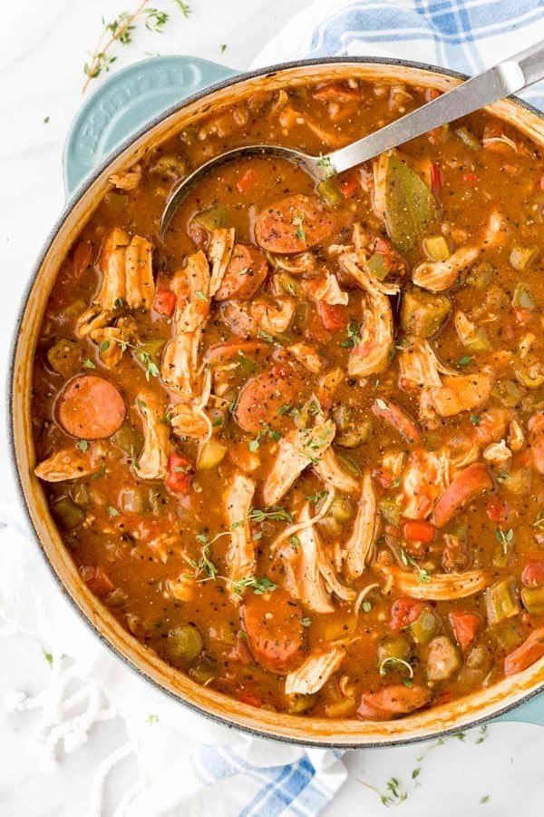

New Orleans Chicken Andouille Sausage Gumbo

Description
New Orleans is a city filled with culture and passion. The city is full of people ready to try
new things and create new memories. Some of these memories will be based on food.
This gumbo dish was inspired by African and European cultures that have a long history in Louisiana. Gumbo is a
stew that combines several ingredients to create one flavorful dish.
Ingredients
- 2 pounds boneless skinless chicken breast, or thigh
- 2 quarts water, to cook the chicken
- 1 pound okra, 1" pieces, or frozen
- ½ cup water
- ½ cup unsalted butter
- ½ cup all-purpose flour
- 1 ½ cup yellow onion, ¼" dice
- 1 ½ cup bell pepper, ¼" dice, green and red
- ⅓ cup celery, ¼" dice
- 2 teaspoons minced garlic
- 2 cups diced canned tomatoes
- 12 ounces andouille sausage, cooked, ½" slices
- 1 dried bay leaf
- 1 teaspoon dried thyme
- 1 teaspoon dried basil
- 1 teaspoon cayenne pepper
- 1 teaspoon kosher salt
- ½ teaspoon black pepper
- 1 tablespoon gumbo filé, Zatarain's
Steps
- Cook the Chicken: In a medium-sized pot, add chicken and cover with 2 quarts of water. Bring to a boil, then reduce to a simmer until fully cooked, about 20 to 25 minutes.
The internal temperature should reach 160ºF (71ºC). Strain the chicken broth and reserve.
- Shred the Meat: Remove cooked chicken from the pot. Allow it to cool, then shred into small pieces. Cover and set aside.
- Cook the Okra: In a medium-sized pot, add okra and ½ cup of water. Bring to a boil, then reduce heat and cover. Simmer, occasionally stirring, until tender, about 7 to 9 minutes. Transfer to a colander, drain and set aside.
- Make the Roux: In a large dutch oven or heavy-bottomed pot, combine butter and flour. Cook over medium heat, frequently stirring with a whisk, until a dark brown roux forms, about 15 minutes.
- Saute the Vegetables: Add onion, bell peppers, celery, and garlic to the pot. Sauté until vegetables are tender, about 8 to 10 minutes.
- Cook the Sausage: Add cooked okra, tomatoes, and sliced sausage. Cook for 10 minutes, stirring occasionally.
- Add the Seasonings: Add bay leaf, thyme, basil, cayenne, salt, and pepper.
- Simmer: Stir in 4 cups of the reserved chicken broth. Loosely cover the pot and simmer over medium-low heat, occasionally stirring until the gumbo thickens, about 30 minutes.
- Simmer the Chicken: Add the cooked shredded chicken and simmer for an additional 15 minutes.
- Add the Gumbo Filé: Turn off the heat and slowly stir in the gumbo filé. Do not reboil after adding, as this tends to make the gumbo stringy—taste and season with more salt and pepper as desired. Add more chicken broth if you want a less thick consistency.
- To Serve: Scoop and serve over steamed rice.
Source
https://www.jessicagavin.com/chicken-andouille-sausage-gumbo/